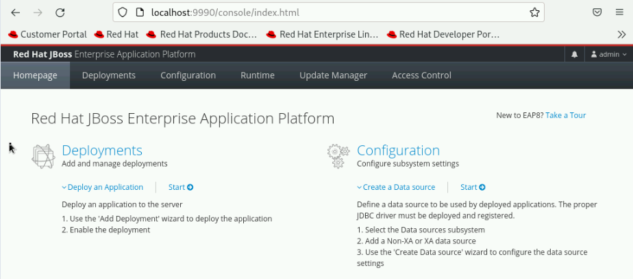

Managing JBoss EAP
JBoss EAP 8 Management Options
-
JBoss EAP 8 has multiple subsystems that you can customize to support Jakarta EE application requirements, such as database connectivity, batch processing, and integration tools.
-
The JBoss EAP configuration is maintained in the
standalone.xmlfile for the standalone mode, and thedomain.xmlfile for a managed domain mode. -
These configuration files can be customized using three different approaches:
-
Management console: As a system administrator, you can manage most of the capabilities of your standalone or managed domain deployments by using a JBoss EAP web console or Management console.
-
Management Command Line Interface(CLI): The CLI offers a management model for viewing and modifying attributes and for performing operations, on a standalone server or a managed domain.
-
Edit XML configuration files manually: The settings of a standalone server or a managed domain are maintained in XML-based configuration files, which can be modified directly.
-
Editing XML files directly should be avoided as much as possible! The CLI or the web console is preferred method for configuration files customization.
Administrative Users
-
The JBoss EAP installer creates an administrative user during the installation process.
-
If additional administrative users are required, or if the installation was NOT done using the JBoss EAP installer, then you can create new users.
Types of users
-
You can add two different types of users:
-
Management user: They are responsible for accessing the administrative tools from JBoss EAP.
-
Application user: They are used by Jakarta EE applications.
-
-
You can create these users by using the
add-user.shscript in interactive as well as non-interactive mode.
Lab: Managing Administrator Account
-
Start the JBoss EAP 8 server as the jboss user.
[vagrant@server ~]$ sudo -u jboss /opt/EAP-8.0.0/bin/standalone.sh
-
Modify existing
adminuser’s password toredhat123.-
In a new terminal window, run the
add-user.shscript as the jboss user and enter the values highlighted in bold as shown in below command output.[vagrant@server ~]$ sudo -u jboss /opt/jboss-eap-7.4/bin/add-user.sh What type of user do you wish to add? a) Management User (mgmt-users.properties) b) Application User (application-users.properties) (a): a Enter the details of the new user to add. Using realm 'ManagementRealm' as discovered from the existing property files. Username : admin User 'admin' already exists and is enabled, would you like to... a) Update the existing user password and roles b) Disable the existing user c) Type a new username (a): a Password recommendations are listed below. To modify these restrictions edit the add-user.properties configuration file. - The password should be different from the username - The password should not be one of the following restricted values {root, admin, administrator} - The password should contain at least 8 characters, 1 alphabetic character(s), 1 digit(s), 1 non-alphanumeric symbol(s) Password : redhat123 WFLYDM0102: Password should have at least 1 non-alphanumeric symbol. Are you sure you want to use the password entered yes/no? yes Re-enter Password : redhat123 What groups do you want this user to belong to? (Please enter a comma separated list, or leave blank for none)[ ]: Press Enter Updated user 'admin' to file '/opt/EAP-8.0.0/standalone/configuration/mgmt-users.properties' Updated user 'admin' to file '/opt/EAP-8.0.0/domain/configuration/mgmt-users.properties' Updated user 'admin' with groups to file '/opt/EAP-8.0.0/standalone/configuration/mgmt-groups.properties' Updated user 'admin' with groups to file '/opt/EAP-8.0.0/domain/configuration/mgmt-groups.properties'
-
-
Verify that you have a user named
adminin/opt/EAP-8.0.0/standalone/configuration/mgmt-users.propertiesand/opt/EAP-8.0.0/domain/configuration/mgmt-users.propertiesfile, and the user has a hashed password.[vagrant@server ~]$ sudo cat /opt/EAP-8.0.0/standalone/configuration/mgmt-users.properties | grep -v "" admin=fa522cb75d2d2ac01fb09f2ab21e4302 [vagrant@server ~]$ sudo cat /opt/EAP-8.0.0/domain/configuration/mgmt-users.properties | grep -v "" admin=fa522cb75d2d2ac01fb09f2ab21e4302
-
Log in to the management console using web browser to http://localhost:9990/, as the
adminuser andredhat123as the password. You should see the home page of the JBoss EAP 8 management console as shown in the screenshot below.
-
-
Create a new management user named
newadminand passwordredhat123.-
Run the
add-user.shscript as the jboss user and enter the values highlighted in bold as shown in below command output.[vagrant@server ~]$ sudo -u jboss /opt/EAP-8.0.0/bin/add-user.sh What type of user do you wish to add? a) Management User (mgmt-users.properties) b) Application User (application-users.properties) (a): a Enter the details of the new user to add. Using realm 'ManagementRealm' as discovered from the existing property files. Username : newadmin Password recommendations are listed below. To modify these restrictions edit the add-user.properties configuration file. - The password should be different from the username - The password should not be one of the following restricted values {root, admin, administrator} - The password should contain at least 8 characters, 1 alphabetic character(s), 1 digit(s), 1 non-alphanumeric symbol(s) Password : redhat123 WFLYDM0102: Password should have at least 1 non-alphanumeric symbol. Are you sure you want to use the password entered yes/no? yes Re-enter Password : redhat123 What groups do you want this user to belong to? (Please enter a comma separated list, or leave blank for none)[ ]: Press enter About to add user 'newadmin' for realm 'ManagementRealm' Is this correct yes/no? yes Added user 'newadmin' to file '/opt/EAP-8.0.0/standalone/configuration/mgmt-users.properties' Added user 'newadmin' to file '/opt/EAP-8.0.0/domain/configuration/mgmt-users.properties' Added user 'newadmin' with groups to file '/opt/EAP-8.0.0/standalone/configuration/mgmt-groups.properties' Added user 'newadmin' with groups to file '/opt/EAP-8.0.0/domain/configuration/mgmt-groups.properties' -
Log in to the management console using web browser to http://localhost:9990/, as the
newadminuser andredhat123as the password. You should see the home page of the JBoss EAP 8 management console.
-